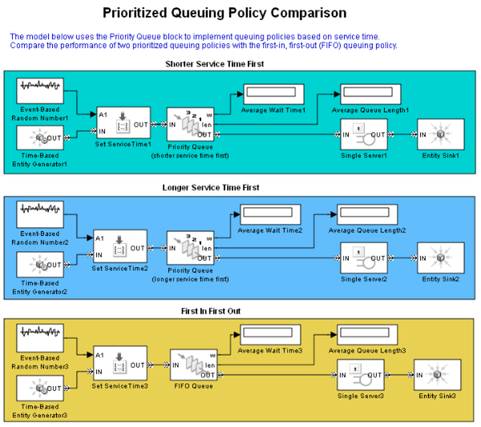

Prioritized Queuing Policy Comparison
Contents
Overview
This model uses the Priority Queue block to implement queuing policies based on service time.
Structure
This model compares the performance of two prioritized queuing policies with the first-in, first-out (FIFO) queuing policy.